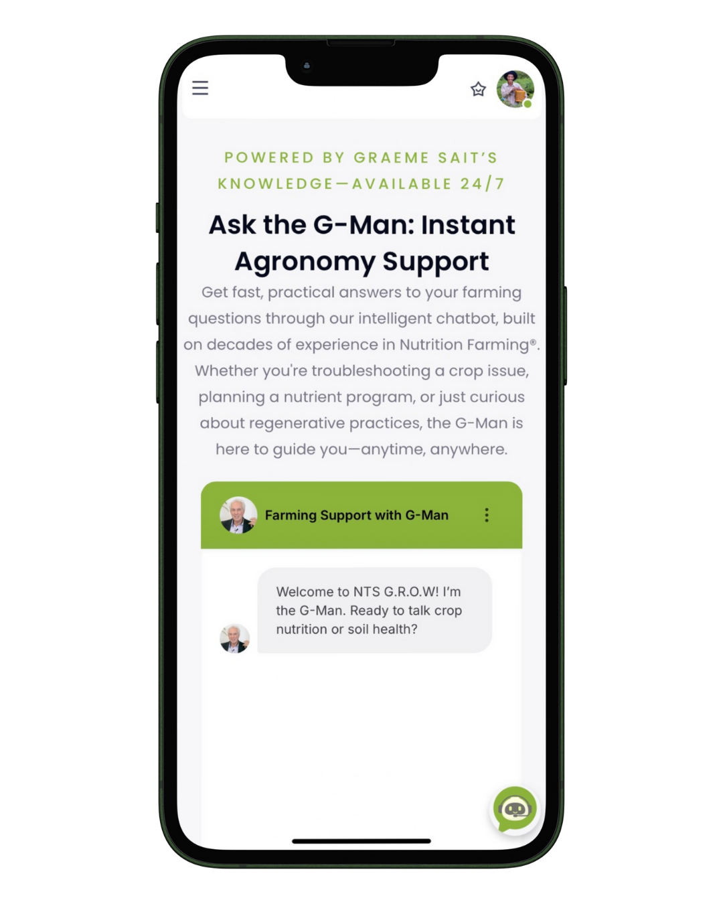
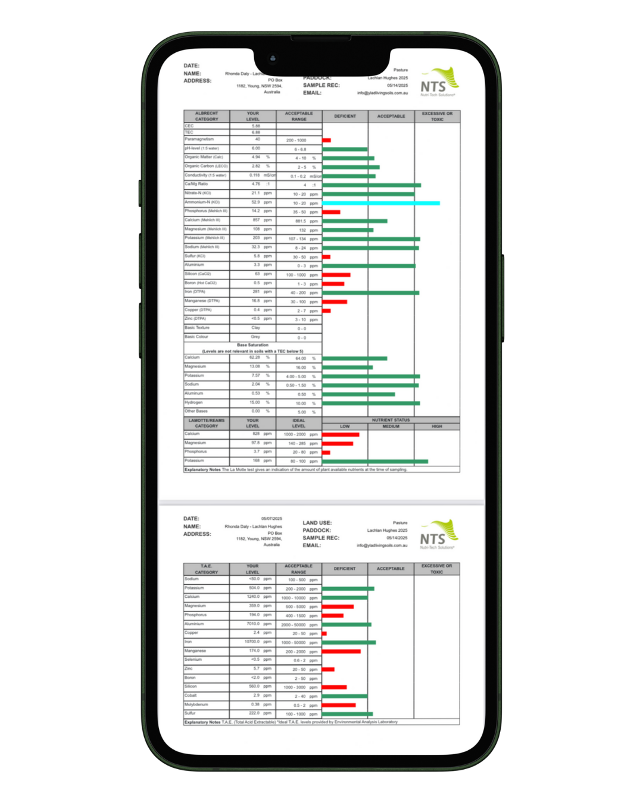
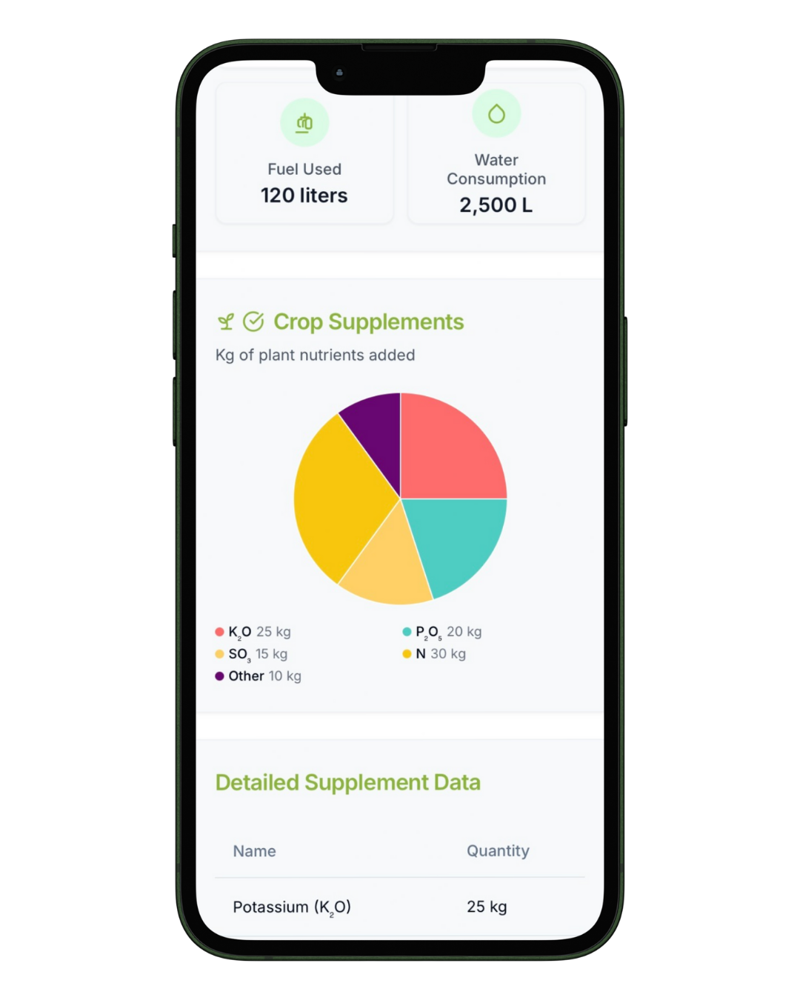
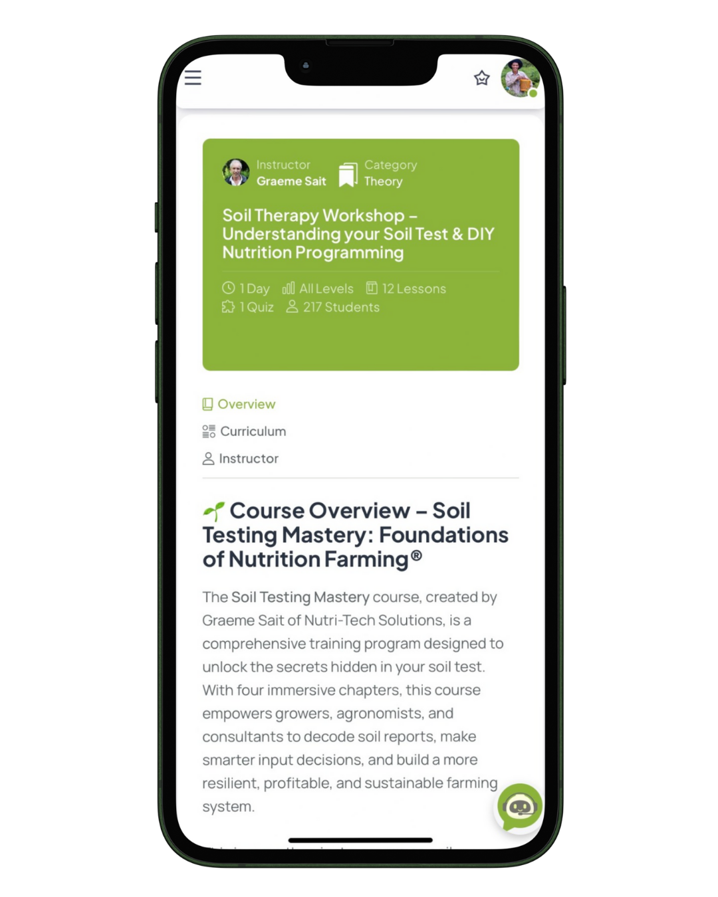

NTS G.R.O.W delivers all the essential tools and features
to revolutionize your farming operations and boost productivity.
NTS G.R.O.W provides all the essential farming tools you need
in one integrated platform for seamless farm management.


Connect with the G-Man, our AI-powered agricultural assistant trained to help farmers with agricultural and health matters. Schedule meetings with Graeme Sait, our agronomy team, and support specialists—or use live chat when you need quick help.

Resilience covers soil, plant, and SAP nutrition: upload lab results, run conversions and specialised tools, request partner lab workflows, and see nutrient status, recommendations, and history in one place.

Complete farm management for mapping, activities, inventory, and reporting—with separate areas for satellite & crop insights and QR traceability. Farms and paddocks are the master records that tie it together.
Full Organisation—including satellite imagery, traceability, G.R.O.W Reports, Smart Tools, and the operations dashboard—is available on higher plans. Nutrition Basics and Essentials include a subset of these modules; see Pricing for details.
Learn More
Wisdom is your learning and community hub: the G.R.O.W Library, courses and videos, live and on-demand events, podcasts, forum and news, simulations and games, plus in-app help when you need it.
Get personalized support from the NTS agronomy team and access comprehensive tools to optimize your farming operations for productivity and sustainability.
Get direct access to the NTS agronomy team and certified agronomists for personalized advice on crop nutrition, soil health, and animal health where relevant.
See what matters on the farm with reports and dashboards tied to nutrition, yield, and season trends—so you can adjust plans with confidence.
Access our comprehensive library of farming knowledge, courses, and expert insights to stay ahead of agricultural best practices.